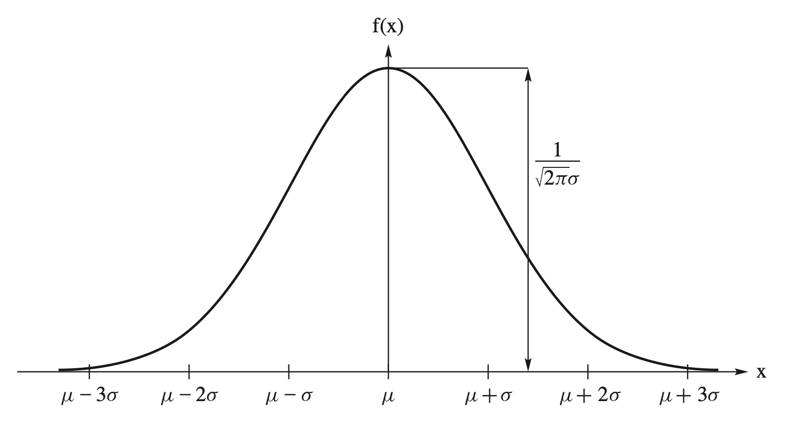
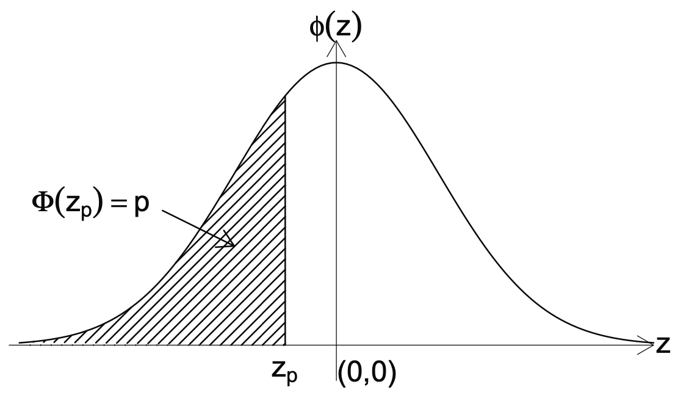
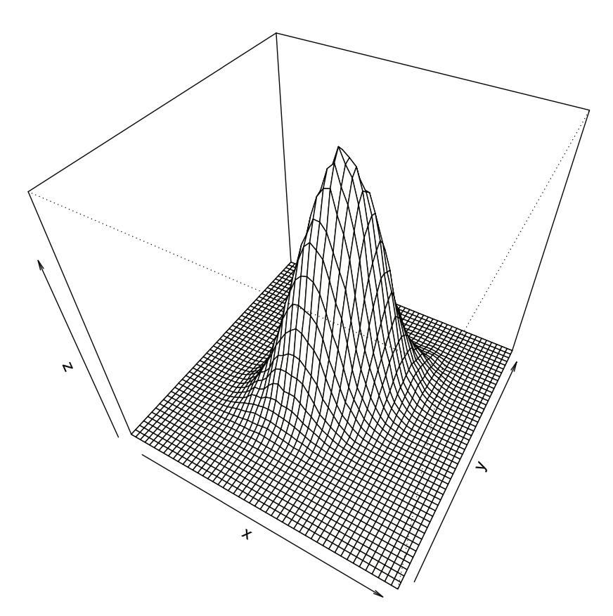

3 常用機率分配
本章以 Hogg, McKean & Craig, Introduction to Mathematical Statistics, 8th Global Edition（以下簡稱 HMC8）Chapter 3 為編號依據。保留原講義的公式與例題，但不按篇幅平均講授：先喚醒大二已學過的常用分配，再深化分配之間的結構與推導，最後銜接後續抽樣分配與統計推論。
\[ \boxed{\text{Recall}\longrightarrow\text{Deepen}\longrightarrow\text{Connect}} \]
本講義由蘇南誠老師編授。感謝黃怡婷老師提供原始數理統計講義檔案；本章保留原有英文術語與公式，並整理為可連續閱讀的教學形式。
學習目標
完成本章後，學生應能：
- 辨認二項、Poisson 與相關離散分配
- 掌握 Gamma、卡方與 Beta 分配
- 運用常態與多變量常態分配
- 說明 t 與 F 分配的生成方式
- 比較各分配的參數、支持集、期望與變異數
必備的先備知識
第 1 至 2 章的機率質量函數、密度函數與變數轉換。
以下依原講義順序整理核心定義、定理、公式與例題。
Stage 1 — Recall：常用離散分配快速複習
本階段以例題帶回 Bernoulli、binomial、negative binomial、geometric、multinomial、hypergeometric 與 Poisson 分配；定義與基本動差不重新等比例講解。
3.2 The Poisson Distribution
Motivation
Suppose the number of cell phone calls passing through a relay tower between 9 and 10 A.M is counted.
Suppose the number of flaws in 100 feet of wire is counted.
Suppose the number of customers that arrive at a ticket window between 12 noon and 2 P.M is counted.
Definition
Let \(X_t\) denote the number of occurrences of such a process over the interval \((0, t]\).
The range of \(X_t\) is the set of nonnegative integers {0, 1, 2, \(\ldots\)}.
Let \(g(x, t)\) denote the probability of \(x\) changes in each interval of length \(t\), i.e. \[g(x,t) = P[X_t = x]\]
Definition
An approximate Poisson process with parameter \(\lambda>0\) if the following conditions are satisfied:
The number of occurrences in nonoverlapping subintervals are independent.
The probability of exactly one occurrence in a sufficiently short subinterval of length \(h\) is approximately \(\lambda h\). \[g(1, h) = \lambda h + o(h)\]
The probability of two or more occurrences in a sufficiently short subinterval is essentially zero. \[\sum_{t=2}^{\infty} g(t, h) = o(h).\]
Note
\(o(h)\) notation means that \(o(h)/h \rightarrow 0\) as \(h \rightarrow 0\).
For instance, \(h^2 = o(h)\) and \(o(h) + o(h) = o(h)\).
Proof I
- Show \(g(0, t) = e^{-\lambda t}\).
Proof II
- Show \(g(x, t) = \frac{(\lambda t)^x e^{-\lambda t}}{x!}, x = 1, 2 , 3, \ldots\).
Recall
\[\small \begin{aligned} \lim_{n\rightarrow\infty} \frac{n(n-1)\cdots(n-x+1)}{n^x}&=\lim_{n\rightarrow\infty}\left[(1)\left(1-\frac{1}{n}\right)\cdots\left(1-\frac{x-1}{n}\right)\right]=1\\ \lim_{n\rightarrow\infty}\left(1-\frac{\lambda}{n}\right)^n&=e^{-\lambda}\\ \lim_{n\rightarrow\infty}\left(1-\frac{\lambda}{n}\right)^x&=1 \end{aligned}\]
Poisson distribution
\(X\) has a Poisson distribution if its pmf is of the form \[f(x) = \frac{\lambda^x e^{-\lambda}}{x!},~x=0, 1, 2, \cdots\]
Show \(\sum_{x=0}^\infty f(x)=1\).
Moment
- Show that \(E[X]=\lambda\) and \(\operatorname{Var}(X)=\lambda\).
Moment generating function
- Show that \[M(t)=e^{\lambda(e^t-1)}, ~t\in R.\]
Additive properties
定理 3.2
Let \(X_1, X_2, \ldots, X_n\) be independent random variables such that \(X_i\sim Poisson(m_i)\), for \(i=1, 2, \ldots, n\).
The distribution of \(Y=\sum_{i=1}^n X_i\) is a \(Poisson(\sum_{i=1}^n m_i)\) distribution.
Stage 2 — Deepen：連續分配的結構與推導
本階段著重由 transformation、Gamma function、MGF 與加法性質建立分配間的關係，並把單變量結果推廣到常態向量。
3.3 The \(\Gamma\), \(\chi^2\), and \(\beta\) Distributions
Recall
Poisson distribution with mean \(\lambda\)
- Record the number of occurrence in a given interval.
Exponential distribution
- Denote the waiting time \(W\) between the occurrences.
Derivation of the exponential distribution function
- The cdf of the waiting time is \[\begin{aligned} F(w)=P[W\le w]&=1-P[W>w]\\&=1-P[\text{no occurrence in }[0, w]] \\&=1-e^{-\lambda w} \end{aligned}\] for \(w>0\).
The pdf of an exponential distribution
- The pdf of the waiting time is \[\begin{aligned} f(w)=\lambda e^{-\lambda w} \end{aligned}\] for \(w>0\).
An alternative representation of pdf
- The pdf of the waiting time is \[\begin{aligned} f(w)=\frac{1}{\theta} e^{-w/\theta} \end{aligned}\] for \(w>0\).
Mgf of exponential distribution
- The mgf of the exponential distribution is \[M(t) = \frac{1}{1-\theta t}, t<\frac{1}{\theta}.\]
Special moments of exponential distribution
The expected value is \(\mu=\theta\).
The variance is \(\sigma^2=\theta^2\).
Remark
- The exponential distribution has a forgetfulness properties, i.e., \[P[X>x+y|X>x]=P[X>y].\]
Derivation of the Gamma distribution function
Let \(W\) denote the waiting time till the \(\alpha\)th occurrence.
The cdf of \(W\) is \[\begin{aligned} F(w)=P[W\le w]&=1-P[W>w]\\&=1-P[\text{fewer than }\alpha\text{ occurrences in }[0, w]] \\& =1-\sum_{k=0}^{\alpha-1}\frac{(\lambda w)^ke^{-\lambda w}}{k!} \end{aligned}\] for \(w>0\).
The pdf of gamma distribution
- The pdf of \(W\) is \[\begin{aligned} f(w)=\frac{\lambda^\alpha}{(\alpha-1)!}w^{\alpha-1}e^{-\lambda w} \end{aligned}\] for \(w>0\).
The gamma function
The gamma function is defined by \[\Gamma(t)=\int_0^{\infty}y^{t-1}e^{-y}dy, t>0.\] for \(w>0\).
When \(t=n\) is a positive integer, then \(\Gamma(n)=(n-1)!\).
The gamma distribution
- The gamma distribution is defined as \[f(x) = \frac{1}{\Gamma(\alpha)\theta^\alpha}x^{\alpha-1}e^{-x/\theta}, 0\le x<\infty.\]
The gamma distribution
- Show that \[\int_0^\infty f(x) dx= \int_0^{\infty} \frac{1}{\Gamma(\alpha)\theta^\alpha}x^{\alpha-1}e^{-x/\theta}dx=1.\]
Mgf of the gamma distribution
- Show that \[M(t)=\frac{1}{(1-\theta t)^\alpha},~t<\frac{1}{\theta}.\]
Special moments of the gamma distribution
- Show that \(\mu=\alpha\theta\) and \(\sigma^2=\alpha\theta^2\).
Chi-square distribution
Let \(X\) have a gamma distribution with \(\theta=2\) and \(\alpha=r/2\), where \(r\) is a positive integer.
The pdf of \(X\) is \[f(x)=\frac{1}{\Gamma(r/2)2^{r/2}}x^{r/2-1}e^{-x/2},\] for \(0<x<\infty.\)
Properties of the chi-square distribution
The mgf is \[M(t)=(1-2t)^{-r/2}, t<\frac{1}{2}.\]
\(E[X]=r\) and \(\sigma^2=2r\).
Percentiles
Let \(\alpha\) be a positive probability (usually less than 0.05).
\(X\sim \chi^2(r)\).
Then \(\chi_\alpha^2(r)\) is a number such that \[P[X\ge \chi_\alpha^2(r)]=\alpha.\]
\(\chi_{1-\alpha}^2(r)\) is the 100(\(1-\alpha\))th percentile.
The 100\(\alpha\) percentile is the number such that \[P[X\le \chi_{1-\alpha}^2(r)]=1-\alpha.\]
Example 9
Let \(X\) have a gamma distribution with \(\alpha = r/2\), where \(r\) is a positive integer, and \(\beta > 0\).
Define the random variable \(Y = 2\beta X\).
Find the distribution of \(Y\).
Beta distribution
Let \(X_1\) and \(X_2\) be two independent random variables that have \(\Gamma\) distributions with parameters \(\alpha\) and \(\beta\).
Let \(Y_1 = X_1+X_2\) and \(Y_2=X_1/(X_1+X_2)\).
Find the distribution of \(Y_2\).
Special moments of beta distribution
\(E[Y_2] = \frac{\alpha}{\alpha+\beta}\)
\(\operatorname{Var}(Y_2) = \frac{\alpha\beta}{(\alpha+\beta+1)(\alpha+\beta)^2}\)
Example 10 — Dirichlet Distribution
Let \(X_1, X_2, \ldots, X_{k+1}\) be independent random variables that have \(\Gamma\) distributions with parameters \(\alpha_i\) and \(\beta=1\), \(i=1, 2, \ldots, k+1\).
Let \(Y_i = X_i/(X_1+X_2+\cdots+X_{k+1})\), \(i= 1, 2, \ldots, k\).
Find the joint distribution of \(Y_i\), \(i= 1, 2, \ldots, k\).
3.4 The Normal Distribution
Normal distribution
Let \(X\) have a normal distribution.
The pdf of \(X\) is given by \[f(x) = \frac{1}{\sigma\sqrt{2\pi}}\exp\left[ -\frac{(x-\mu)^2}{2\sigma^2}\right], -\infty<x<\infty,\] where
\(-\infty<\mu<\infty\)
\(0<\sigma<\infty\)
\(X\sim N(\mu,\sigma^2)\).
Pdf of normal distribution

Derivation
- Show that \[\int_{-\infty}^{\infty}f(x) dx=1.\]
Mgf of normal distribution
- Show that \[M(t)=\exp\left(\mu t+\frac{\sigma^2 t^2}{2}\right)\]
Special moments of normal distribution
- Show that \(E[X]=\mu\) and \(\operatorname{Var}(X)=\sigma^2\).
Standard normal distribution
Let \(Z\sim N(0,1)\).
\(Z\) has a standard normal distribution.
The cdf of \(Z\) is \[\Phi(z)=P[Z\le z]=\int_{-\infty}^z\frac{1}{\sqrt{2\pi}}e^{-w^2/2}dw.\]
Table values are provided.
Properties
- Show that \(\Phi(z)=1-\Phi(-z)\).
Example 11
Find
\(P[Z\le 1.24]\)
\(P[1.24\le Z\le 2.37]\)
\(P[-2.37\le Z\le -1.24]\)
Example 12
Find \(a\) and \(b\) such that
\(P[Z\le a]=0.9147\) and
\(P[Z\ge b]=0.0526\).
Percentiles
Let \(\alpha\) be a positive probability (usually less than 0.05).
\(Z\sim N(0,1)\).
Then \(z_\alpha\) is a number such that \[P[X\ge z_\alpha]=\alpha.\]
\(z_\alpha\) is the 100(\(1-\alpha\))th percentile.
The 100\(\alpha\) percentile is the number such that \[P[X\le z_\alpha]=1-\alpha.\]
Standard normal pdf

Example 13
- Show that \(z_{1-\alpha}=-z_{\alpha}.\)
Theorem
定理 3.3
- If \(X\sim N(\mu,\sigma^2)\), then \(Z=\frac{X-\mu}{\sigma} \sim N(0,1)\).
Remark
Let \(X\) is any random variable with \(E[X]=\mu\) and \(\operatorname{Var}(X)=\sigma^2\).
Let \(Z=\frac{X-\mu}{\sigma}\).
We have \[\begin{align*} \mu_Z&=E[Z]\\ \sigma_Z^2 &=E\left[\left(\frac{X-\mu}{\sigma}\right)^2\right] \end{align*}\]
\(Z\) is often called the standard score associated with \(X\)
Theorem
定理 3.4
- If \(X\sim N(\mu,\sigma^2)\), then \(V=\left(\frac{X-\mu}{\sigma}\right)^2 \sim \chi^2(1)\).
Additive properties of normal distribution
定理 3.5
Let \(X_1, \ldots , X_n\) be independent random variables such that, for \(i = 1,\ldots,n\),
\(X_i\) has a \(N(\mu_i,\sigma_i^2)\) distribution.
Let \(Y =\sum_{i=1}^n a_iX_i\), where \(a_1,\ldots, a_n\) are constants.
Then the distribution of \(Y\) is \(N( \sum_{i=1}^na_i\mu_i, \sum_{i=1}^na_i^2\sigma_i^2)\)
3.5 The Multivariate Normal Distribution
Bivariate normal distribution
Assume \(X\sim N(\mu_X, \sigma_X^2)\).
The joint pdf of \(X\) and \(Y\) is \[f(x,y)=\frac{1}{2\pi\sigma_X\sigma_Y\sqrt{1-\rho^2}}\exp\left[-\frac{q(x,y)}{2}\right]\] where \[\begin{aligned} q(x,y) = &\frac{1}{1-\rho^2}\Big[\left(\frac{x-\mu_X}{\sigma_X}\right)^2 -2\rho \left(\frac{x-\mu_X}{\sigma_X}\right) \left(\frac{y-\mu_Y}{\sigma_Y}\right)\\ &+\left(\frac{y-\mu_Y}{\sigma_Y}\right)^2 \Big] \end{aligned}\]
It is called a bivariate normal pdf.
Bivariate normal with \(\rho=0.5\)

Mgf
- Show that the joint mgf is \[M(t_1, t_2) = \exp\left\{t_1\mu_1+t_2\mu_2 +\frac{1}{2}(t_1^2\sigma_1^2+2t_1t_2\rho\sigma_1\sigma_2+t_2^2\sigma_2^2)\right\}\]
Theorem
定理 3.6 If \(X\) and \(Y\) have a bivariate normal distribution with correlation coefficient \(\rho\), then \(X\) and \(Y\) are independent if and only if \(\rho=0\).
Multivariate normal distribution
Consider the random vector \(\boldsymbol{Z} = (Z_1,\ldots,Z_n)^{'}\) , where \(Z_1,\dots,Z_n\) are iid \(N(0,1)\).
Then the joint density of \(\boldsymbol{Z}\) is \[f(\boldsymbol{z}) = \left(\frac{1}{2\pi}\right)^{n/2} \exp\left\{-\frac{1}{2}\boldsymbol{z}^{'}\boldsymbol{z}\right\}\] for \(\boldsymbol{z}\in R^n\).
\(\boldsymbol{Z}\) has a multivariate normal distribution with mean vector \(\boldsymbol{0}\) and covariance matrix \(\boldsymbol{I}_n\).
We abbreviate this by saying that \(\boldsymbol{Z}\) has an \(N_n(\boldsymbol{0}, \boldsymbol{I}_n)\) distribution
Moments
- We have \[\begin{aligned} E[\boldsymbol{Z}] & = \boldsymbol{0}\\ \operatorname{Var}[\boldsymbol{Z}] & = \boldsymbol{I}_n\\ \end{aligned}\]
Moment generating function
- We have \[\begin{aligned} M(\boldsymbol{t}) & = \exp\left\{\frac{1}{2}{\boldsymbol t}^{'}\boldsymbol{t}\right\} \end{aligned}\]
Spectral Decomposition of Covariance matrix
Suppose \(\boldsymbol{\Sigma}\) is a \(n\times n\), symmetric, and positive semi-definite matrix.
\(\boldsymbol{\Sigma}\) can be decomposed as \[\boldsymbol{\Sigma} = \boldsymbol{\Gamma}^{'} \boldsymbol{\Lambda}\boldsymbol{\Gamma},\] where
\(\boldsymbol{\Lambda}\) is the diagonal matrix \(\boldsymbol{\Lambda} = diag(\lambda_1, \ldots, \lambda_n )\),
\(\lambda_1\ge\lambda_2\ge \cdots\ge \lambda_n\ge 0\) are the eigenvalues of \(\boldsymbol{\Sigma}\),
the columns of \(\boldsymbol{\Gamma}^{'}\), \(v_1, v_2,\ldots , v_n\), are the corresponding eigenvectors
Properties of orthogonal matrix
\(\boldsymbol{\Gamma}\) is an orthogonal matrix.
\(\boldsymbol{\Gamma}^{-1}\) = \(\boldsymbol{\Gamma}^{'}\)
Thus, we have \[\boldsymbol{\Gamma}\boldsymbol{\Gamma}^{'} = \boldsymbol{I}\]
Another representation of \(\boldsymbol{\Sigma}\)
\(\boldsymbol{\Sigma}\) can be expressed as \[\begin{aligned} \boldsymbol{\Sigma} =& \boldsymbol{\Gamma}^{'}\boldsymbol{\Lambda}\boldsymbol{\Gamma}\\ =& [\boldsymbol{\Gamma}^{'}\boldsymbol{\Lambda}^{1/2}\boldsymbol{\Gamma}] [\boldsymbol{\Gamma}^{'}\boldsymbol{\Lambda}^{1/2}\boldsymbol{\Gamma}]\\ \end{aligned}\]
Denote \[\boldsymbol{\Sigma} ^{1/2} = [\boldsymbol{\Gamma}^{'}\boldsymbol{\Lambda}^{1/2}\boldsymbol{\Gamma}]\]
\(\boldsymbol{\Sigma}^{1/2}\) is symmetric and positive semi-definite.
Suppose \(\boldsymbol{\Sigma}\) is positive definite; that is, all of its eigenvalues are strictly positive. Then \[(\boldsymbol{\Sigma} ^{1/2})^{-1} = [\boldsymbol{\Gamma}^{'}\boldsymbol{\Lambda}^{-1/2}\boldsymbol{\Gamma}^{'}]\]
Transformation of multivariate normal distribution
Suppose \(\boldsymbol{Z}\) has an \(N_n(\boldsymbol{0}, \boldsymbol{I}_n)\) distribution.
Let \(\boldsymbol{\Sigma}\) be a positive semi-definite, symmetric matrix and let \(\boldsymbol{\mu}\) be an \(n \times 1\) vector of constants.
Define \[\boldsymbol{X} = \boldsymbol{\Sigma}^{1/2}\boldsymbol{Z} + \boldsymbol{\mu}\]
Moments
- We have \[\begin{aligned} E[\boldsymbol{X}] & = \boldsymbol{\mu}\\ \operatorname{Var}[\boldsymbol{X}] & = \boldsymbol{\Sigma} \end{aligned}\]
Moment generating function
- We have \[\begin{aligned} M(\boldsymbol{t}) & = \exp\left\{\boldsymbol{t}^{'} \boldsymbol{\mu} + \frac{1}{2}{\boldsymbol t}^{'}\boldsymbol{\Sigma}\boldsymbol{t}\right\} \end{aligned}\]
Multivariate normal distribution
定義 3.1
\(\boldsymbol{X}\) has a multivariate normal distribution if its mgf is \[\begin{aligned} M(\boldsymbol{t}) & = \exp\left\{\boldsymbol{t}^{'} \boldsymbol{\mu} + \frac{1}{2}{\boldsymbol t}^{'}\boldsymbol{\Sigma}\boldsymbol{t}\right\} \end{aligned}\] for all \(\boldsymbol{t}\in R^n\).
We say \(\boldsymbol{X}\) has a \(N_m(\boldsymbol{\mu}, \boldsymbol{\Sigma})\).
Multivariate normal density function
We have \[\boldsymbol{Z} = \boldsymbol{\Sigma}^{-1/2}(\boldsymbol{X} - \boldsymbol{\mu} )\]
The Jacobian equals \(|\boldsymbol{\Sigma}^{-1/2}| = |\boldsymbol{\Sigma}|^{-1/2}\)
Then the joint density of \(\boldsymbol{X}\) is \[f(\boldsymbol{x}) = \frac{1}{(2\pi)^{n/2} |\boldsymbol{\Sigma}|^{1/2}} \exp\left\{-\frac{1}{2}(\boldsymbol{x} - \boldsymbol{\mu})^{'}\boldsymbol{\Sigma}^{-1}(\boldsymbol{x} - \boldsymbol{\mu})\right\}\] for \(\boldsymbol{x}\in R^n\).
Distribution of quadratic term
定理 3.7
\(\boldsymbol{X}\) has a \(N_n(\boldsymbol{\mu}, \boldsymbol{\Sigma})\), where \(\boldsymbol{\Sigma}\) is positive definite.
Then \(Y=(\boldsymbol{X} - \boldsymbol{\mu} )^{'}\boldsymbol{\Sigma}^{-1} (\boldsymbol{X} - \boldsymbol{\mu} )\) has a \(\chi_n^2\) distribution.
Distribution of linear combination
定理 3.8
\(\boldsymbol{X}\) has a \(N_n(\boldsymbol{\mu}, \boldsymbol{\Sigma})\), where \(\boldsymbol{\Sigma}\) is positive definite.
Let \(\boldsymbol{Y}=\boldsymbol{A}\boldsymbol{X} + \boldsymbol{b}\), where \(\boldsymbol{A}\) is an \(m\times n\) matrix and \(\boldsymbol{b}\in R^m\).
Then \(\boldsymbol{Y}\) has a \(N_m(\boldsymbol{A}\boldsymbol{\mu} + \boldsymbol{b}, \boldsymbol{A}\boldsymbol{\Sigma}\boldsymbol{A}^{'})\) distribution.
Partition
Let \[\boldsymbol{X} = \begin{bmatrix} \boldsymbol{X}_1 \\ \boldsymbol{X}_2 \end{bmatrix}\] where \(\boldsymbol{X}_1\) is a subvector of dimension \(m<n\) and \(\boldsymbol{X}_2\) is a subvector of dimension \(p = n - m\).
Let \[\boldsymbol{\mu} = \begin{bmatrix} \boldsymbol{\mu}_1 \\ \boldsymbol{\mu}_2 \end{bmatrix}\] and \[\boldsymbol{\Sigma} = \begin{bmatrix} \boldsymbol{\Sigma}_{11} & \boldsymbol{\Sigma}_{12} \\ \boldsymbol{\Sigma}_{21} & \boldsymbol{\Sigma}_{22} \end{bmatrix}\]
Distribution of \(\boldsymbol{X}_1\)
Let \[\boldsymbol{A} = \begin{bmatrix} \boldsymbol{I}_m \vdots \boldsymbol{O}_{m\times p} \end{bmatrix}\] where \(\boldsymbol{O}_{m\times p}\) an \(m\times p\) matrix of zeroes.
Then \(\boldsymbol{X}_1 = \boldsymbol{A} \boldsymbol{X}\)
Suppose \(\boldsymbol{X}\) has a \(N_n(\boldsymbol{\mu}, \boldsymbol{\Sigma})\) distribution.
Let \[\boldsymbol{X} = \begin{bmatrix} \boldsymbol{X}_1 \\ \boldsymbol{X}_2 \end{bmatrix}\]
Then \(\boldsymbol{X}_1\) has a \(N_n(\boldsymbol{\mu}_1, \boldsymbol{\Sigma}_{11})\) distribution.
Independent partition
定理 3.9
Suppose \(\boldsymbol{X}\) has a \(N_n(\boldsymbol{\mu}, \boldsymbol{\Sigma})\) distribution.
Let \[\boldsymbol{X} = \begin{bmatrix} \boldsymbol{X}_1 \\ \boldsymbol{X}_2 \end{bmatrix}\]
\(\boldsymbol{X}_1\) and \(\boldsymbol{X}_2\) are independent if and only if \(\boldsymbol{\Sigma}_{12}= \boldsymbol{0}\).
Conditional distribution
定理 3.10
Suppose \(\boldsymbol{X}\) has a \(N_n(\boldsymbol{\mu}, \boldsymbol{\Sigma})\) distribution.
Let \[\boldsymbol{X} = \begin{bmatrix} \boldsymbol{X}_1 \\ \boldsymbol{X}_2 \end{bmatrix}\]
Assume \(\boldsymbol{\Sigma}\) is positive definite.
Then the conditional distribution of \(\boldsymbol{X}_1\) given \(\boldsymbol{X}_2\) is \[N_m(\boldsymbol{\mu}_1 + \boldsymbol{\Sigma}_{12}\boldsymbol{\Sigma}_{22}^{-1}(\boldsymbol{X}_2-\boldsymbol{\mu}_2), \boldsymbol{\Sigma}_{11}-\boldsymbol{\Sigma}_{12}\boldsymbol{\Sigma}_{22}^{-1}\boldsymbol{\Sigma}_{21})\]
Special case \(p=2\)
定理 3.11
Suppose \(\boldsymbol{X}\) has a \(N_2(\boldsymbol{\mu}, \boldsymbol{\Sigma})\) distribution.
Let \[\boldsymbol{X} = \begin{bmatrix} X \\ Y \end{bmatrix}\]
Assume \(\boldsymbol{\Sigma}\) is positive definite.
Then the conditional distribution of \(Y\) given \(X=x\) is \[N({\mu}_2 + \rho\frac{\sigma_2}{\sigma_1}(x-{\mu}_1), \sigma_2^2(1-\rho^2))\]
Stage 3 — Connect：抽樣分配與後續推論
本階段把常態、卡方、\(t\) 與 \(F\) 分配連結到 sample mean、sample variance、Student’s theorem，以及後續信賴區間與檢定。
3.6 \(t\)- and \(F\)-Distributions
Student’s \(t\) distribution
定理 3.12
Let \[T=\frac{Z}{\sqrt{U/r}}\] where
\(Z\sim N(0,1)\)
\(U\sim \chi^2_r\)
\(Z\) and \(U\) are independent
Then \(T\) has a \(t\) distribution with pdf \[f(t) = \frac{\Gamma((r+1)/2)}{\sqrt{\pi r}\Gamma(r/2)}\frac{1}{(1+t^2/r)^{(r+1)/2}}, -\infty<t<\infty.\]
Moment
- Show that \[\begin{aligned} E[T] &= 0\\ \operatorname{Var}(T) & = \frac{r}{r-2} , r>2 \end{aligned}\]
Example 14 — \(F\) distribution
Let \(U\) and \(V\) be independent chi-square random variables, with \(r_1\) and \(r_2\) degrees of freedom. \[f(x_1) = \frac{1}{\Gamma(r_1/2) 2^{r_1/2}} x_1^{r_1/2-1} e^{-x_1/2}, 0<x_1<\infty\] and \[f(x_2) = \frac{1}{\Gamma(r_2/2) 2^{r_2/2}} x_2^{r_2/2-1} e^{-x_2/2}, 0<x_1<\infty\]
Find the pdf of \(F=\frac{U/r_1}{V/r_2}\).
Moment
- Show that \[\begin{aligned} E[F] &= \frac{r_2}{r_2-2}, r_2>2 \end{aligned}\]
Student’s theorem
Let \(X_1\), \(\cdots\), \(X_n\) be a random sample from \(N(\mu, \sigma^2)\).
Define \(\bar{X} = \frac{1}{n}\sum_{i=1}^n X_i\) and \(S^2=\frac{1}{n-1}\sum_{i=1}^n(X_i-\bar{X})^2\).
Then
\(\bar{X}\sim N(\mu, \sigma^2/n)\)
\(\frac{(n-1)S^2}{\sigma^2}\sim \chi^2_{n-1}\)
\(\bar{X}\) and \(S^2\) are independent.
\[T =\frac{\frac{\bar{X}-\mu}{\sigma/\sqrt{n}}}{\sqrt{\frac{(n-1)S^2}{\sigma^2}/(n-1)}}=\frac{\bar{X}-\mu}{S/\sqrt{n}}\sim t_{n-1}\]
本章摘要
本章整理統計推論最常出現的分配家族及其生成關係，為抽樣分配、區間估計與檢定奠定基礎。
常見錯誤
- 混淆分配的參數化方式
- 忘記標示支持集
- 套用常態近似時未檢查條件
- 將卡方、t、F 的自由度視為一般尺度參數
章末練習
- 從本章選出三個關鍵定義，分別寫出數學形式、成立條件及一個例子。
- 選擇一個主要定理或方法，重做推導並標記每一步使用的假設。
- 從原講義例題挑選一題，完整寫出解題目標、方法選擇、計算與結果解釋。
- 設計一個會違反本章方法條件的反例，說明錯誤會出現在哪一步。
建議後續為本章補入：中文概念導讀、完整解答、課堂練習難度標記，以及與下一章的銜接說明。